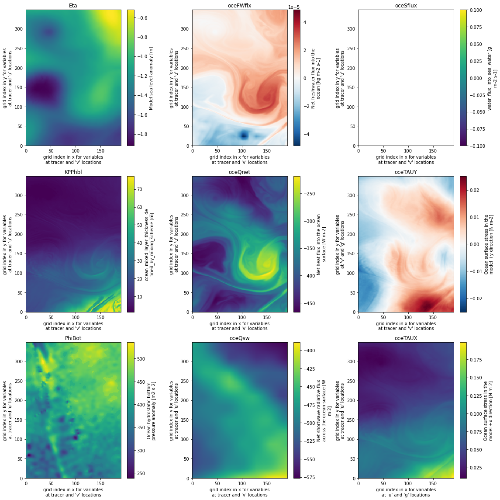
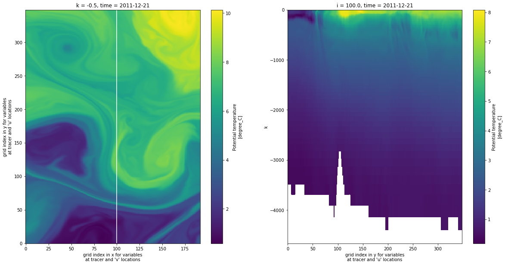

import s3fs
import requests
import xarray as xr
import pylab as plt
from netrc import netrc
from urllib import request
from platform import system
from getpass import getpass
from http.cookiejar import CookieJar
from os.path import expanduser, join
ShortName = "MITgcm_LLC4320_Pre-SWOT_JPL_L4_ACC_SMST_v1.0"
target_file = "LLC4320_pre-SWOT_ACC_SMST_20111221.nc"PRE-SWOT NUMERICAL SIMULATION VERSION 1 User Guide Demo
Author: Jinbo Wang Jinbo.Wang@jpl.nasa.gov, Jack McNelis jack.mcnelis@jpl.nasa.gov
This is a demonstration of accessing the ECCO-BASED PRE-SWOT NUMERICAL SIMULATION. The dataset can be found following https://search.earthdata.nasa.gov/search?q=pocloud%20pre-swot.
Earthdata Login
Authenticate with your Earthdata Login/URS credentials by configuring a .netrc file in your home directory.
machine urs.earthdata.nasa.gov username myusername password mypasswordNote this next cell first tries to establish in-region acccess to the netCDF file in S3. (It assumes that you are running the notebook inside AWS EC2 in the
aws-west-2region.) Upon failure, it assumes that you are running from your local machine, and so it tries to download and open the file the normal way.
Run the next cell to authenticate. (You might be prompted for your Earthdata Login username and password.)
def setup_earthdata_login_auth(endpoint: str='urs.earthdata.nasa.gov'):
netrc_name = "_netrc" if system()=="Windows" else ".netrc"
try:
username, _, password = netrc(file=join(expanduser('~'), netrc_name)).authenticators(endpoint)
except (FileNotFoundError, TypeError):
print('Please provide your Earthdata Login credentials for access.')
print('Your info will only be passed to %s and will not be exposed in Jupyter.' % (endpoint))
username = input('Username: ')
password = getpass('Password: ')
manager = request.HTTPPasswordMgrWithDefaultRealm()
manager.add_password(None, endpoint, username, password)
auth = request.HTTPBasicAuthHandler(manager)
jar = CookieJar()
processor = request.HTTPCookieProcessor(jar)
opener = request.build_opener(auth, processor)
request.install_opener(opener)
setup_earthdata_login_auth()Please provide your Earthdata Login credentials for access.
Your info will only be passed to urs.earthdata.nasa.gov and will not be exposed in Jupyter.Username: marscreature
Password: ·············You should now be able to download the file at the following link:
https_access = f"https://archive.podaac.earthdata.nasa.gov/podaac-ops-cumulus-protected/{ShortName}/{target_file}"
print(https_access)https://archive.podaac.earthdata.nasa.gov/podaac-ops-cumulus-protected/MITgcm_LLC4320_Pre-SWOT_JPL_L4_ACC_SMST_v1.0/LLC4320_pre-SWOT_ACC_SMST_2011122?.ncOpen the dataset
Run the next cell to access/open the netCDF file with xarray:
def begin_s3_direct_access():
"""Returns s3fs object for accessing datasets stored in S3."""
response = requests.get("https://archive.podaac.earthdata.nasa.gov/s3credentials").json()
return s3fs.S3FileSystem(key=response['accessKeyId'],
secret=response['secretAccessKey'],
token=response['sessionToken'],
client_kwargs={'region_name':'us-west-2'})
try:
fs = begin_s3_direct_access()
# Load netCDF with 's3fs' and 'xarray' upon successful connection to S3:
dd = xr.open_dataset(fs.open(f"podaac-ops-cumulus-protected/{ShortName}/{target_file}"))
except:
print("Failed to establish AWS in-region access. Downloading to local disk instead.")
request.urlretrieve(https_access, target_file)
# Load netCDF with 'xarray' after download completes:
dd = xr.open_dataset(target_file)
print(dd)Failed to establish AWS in-region access. Downloading to local disk instead.
<xarray.Dataset>
Dimensions: (i: 192, i_g: 192, j: 349, j_g: 349, k: 84, k_l: 84, k_p1: 85, k_u: 84, nb: 2, time: 24)
Coordinates:
* j_g (j_g) float32 0.0 1.0 2.0 3.0 4.0 ... 345.0 346.0 347.0 348.0
* i (i) float32 0.0 1.0 2.0 3.0 4.0 ... 187.0 188.0 189.0 190.0 191.0
* i_g (i_g) float32 0.0 1.0 2.0 3.0 4.0 ... 188.0 189.0 190.0 191.0
* j (j) float32 0.0 1.0 2.0 3.0 4.0 ... 344.0 345.0 346.0 347.0 348.0
* k (k) int32 0 1 2 3 4 5 6 7 8 9 10 ... 74 75 76 77 78 79 80 81 82 83
* k_u (k_u) int32 0 1 2 3 4 5 6 7 8 9 ... 74 75 76 77 78 79 80 81 82 83
* k_l (k_l) int32 0 1 2 3 4 5 6 7 8 9 ... 74 75 76 77 78 79 80 81 82 83
* k_p1 (k_p1) int32 0 1 2 3 4 5 6 7 8 9 ... 75 76 77 78 79 80 81 82 83 84
* nb (nb) int32 0 1
* time (time) datetime64[ns] 2011-12-21 ... 2011-12-21T23:00:00
Data variables:
XC (j, i) float32 ...
YC (j, i) float32 ...
DXV (j, i) float32 ...
DYU (j, i) float32 ...
Depth (j, i) float32 ...
AngleSN (j, i) float32 ...
AngleCS (j, i) float32 ...
DXC (j, i_g) float32 ...
DYG (j, i_g) float32 ...
DYC (j_g, i) float32 ...
DXG (j_g, i) float32 ...
XG (j_g, i_g) float32 ...
YG (j_g, i_g) float32 ...
RAZ (j_g, i_g) float32 ...
XC_bnds (j, i, nb) float64 ...
YC_bnds (j, i, nb) float64 ...
Z (k) float32 ...
Zp1 (k_p1) float32 ...
Zu (k_u) float32 ...
Zl (k_l) float32 ...
Z_bnds (k, nb) float32 ...
Eta (time, j, i) float64 ...
KPPhbl (time, j, i) float64 ...
PhiBot (time, j, i) float64 ...
oceFWflx (time, j, i) float64 ...
oceQnet (time, j, i) float64 ...
oceQsw (time, j, i) float64 ...
oceSflux (time, j, i) float64 ...
oceTAUX (time, j, i_g) float64 ...
oceTAUY (time, j_g, i) float64 ...
Theta (time, k, j, i) float64 ...
Salt (time, k, j, i) float64 ...
U (time, k, j, i_g) float32 ...
V (time, k, j_g, i) float64 ...
W (time, k_l, j, i) float64 ...
Attributes:
acknowledgement: This research was carried out by the Jet...
author: Dimitris Menemenlis et al.
contributor: Chris Hill, Christopher E. Henze, Jinbo ...
contributor_role: MITgcm developer, AMES supercomputer sup...
cdm_data_type: Grid
Conventions: CF-1.7, ACDD-1.3
creator_email: menemenlis@jpl.nasa.gov
creator_institution: NASA Jet Propulsion Laboratory (JPL)
creator_name: Dimitris Menemelis et al.
creator_type: group
creator_url: https://science.jpl.nasa.gov/people/Mene...
date_created: 2021-01-20T00:00:00
date_issued: 2021-01-20T00:00:00
date_metadata_modified: 2021-01-20T00:00:00
geospatial_lat_max: -53.00567
geospatial_lat_min: -56.989952
geospatial_lat_units: degrees_north
geospatial_lon_max: 154.28125
geospatial_lon_min: 150.30208
geospatial_lon_units: degrees_east
geospatial_bounds_crs: EPSG:4326
geospatial_vertical_max: 0
geospatial_vertical_min: -6134.5
geospatial_vertical_positive: up
geospatial_vertical_resolution: variable
geospatial_vertical_units: meter
history: Inaugural release of LLC4320 regions to ...
id: MITgcm_LLC4320_Pre-SWOT_JPL_L4_ACC_SMST_...
institution: NASA Jet Propulsion Laboratory (JPL)
instrument_vocabulary: GCMD instrument keywords
keywords: EARTH SCIENCE SERVICES > MODELS > EARTH ...
keywords_vocabulary: NASA Global Change Master Directory (GCM...
license: Public Domain
metadata_link: http://podaac.jpl.nasa.gov/ws/metadata/d...
naming_authority: gov.nasa.jpl
platform_vocabulary: GCMD platform keywords
processing_level: L4
product_time_coverage_end: 2012-11-15T00:00:00
product_time_coverage_start: 2011-09-13T00:00:00
product_version: 1.0
program: NASA Physical Oceanography
project: Surface Water and Ocean Topography (SWOT...
publisher_email: podaac@podaac.jpl.nasa.gov
publisher_institution: PO.DAAC
publisher_name: Physical Oceanography Distributed Active...
publisher_type: institution
publisher_url: https://podaac.jpl.nasa.gov
source: MITgcm simulation
standard_name_vocabulary: NetCDF Climate and Forecast (CF) Metadat...
summary: This is a subset of a global ocean simul...
time_coverage_end: 2011-12-21 23:00:00
time_coverage_start: 2011-12-21 00:00:00
title: LLC4320 regional Southern Ocean
geospatial_lon_resolution: variable
geospatial_lat_resolution: variable
platform: MITgcmPlot eight 2D fields.
fig,ax=plt.subplots(3,3,figsize=(16,16))
varn=['Eta','KPPhbl','PhiBot','oceFWflx','oceQnet','oceQsw','oceSflux','oceTAUY','oceTAUX']
for i in range(3):
for j in range(3):
dd[varn[i*3+j]][0,...].plot(ax=ax[j,i])
ax[j,i].set_title(varn[i*3+j])
plt.tight_layout()
Plot a 3D field based (temperature)
fig,ax=plt.subplots(1,2,figsize=(20,10))
theta=dd['Theta'][:]
theta.coords['k']=dd['Z'].data
theta[0,0,...].plot(ax=ax[0])
ax[0].vlines(100,0,400,colors='w')
theta[0,:,:,100].plot(ax=ax[1])<matplotlib.collections.QuadMesh at 0x7f9110022550>